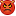
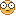
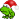
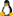

Smilies
Dieser Artikel listet die in Wiki/Smiliesmap definierten Symbole auf und bietet damit eine Übersicht der bei der Portalsoftware Inyoka vordefinierten Smilies. Bitte beachten, dass unabhängig von den technischen Möglichkeiten die Verwendung bestimmten Regeln unterliegt. Z.B. werden im Wiki keine Smilies verwendet, während man sich in Forumsbeiträgen nicht beschränken muss. Allgemein gilt aber auch hier: weniger ist mehr.
Smilies¶
Zur Verwendung im Forum. Manche Smilies unterscheiden sich nur durch ihre Schreibweise.
| Smiley | ||
| Symbol | Roh-Format | Anmerkung |
 | :-) oder :) oder :smile: oder :mrgreen: | |
 | ;-) oder ;) oder :wink: | |
 | :-( oder :( oder :sad: | |
;-( oder :cry: | ||
:-| oder :| oder :neutral: | ||
 | :-P oder :P oder :razz: | |
 | :-D oder :D oder :grin: | |
:lol: | ||
:thumbsup: | ||
:-o oder :o oder :-O oder :eek: | ||
:-? oder :? oder :oops: oder :???: | ||
:-x oder :x oder :mad: | ||
8-) oder # 8) oder :cool: | ||
:-$ | ||
|  | ]:-( | |
]:-) | ||
O:-) | ||
:-> | ||
:-[] oder :[] | ||
§) | ||
|  | 8-o oder :shock: | |
:roll: | ||
<3 | ||
 | 8-} | Insider |
|  | # <8-} | Insider (Weihnachtsdeko) |
 | :!: | |
 | :?: | |
 | :arrow: | |
:backarrow: | ||
:idea: | ||
|  | :tux: | |
Sonstiges¶
Verwendung in Forum und Wiki gestattet.
| Sonstiges | ||
| Symbol | Roh-Format | Funktion |
 | {dl} | Direkte Download-Links oder Seiten, die nur Dateien zum herunterladen auflisten. Wird in der Regel nur zur Kennzeichnung von "Links" verwendet. |
 | {Übersicht} | Übersichtsartikel zum einem bestimmten Thema. Wird in der Regel nur zur Kennzeichnung in Artikelabschnitten "Links" verwendet (siehe unten). |
 | {*} | Ubuntu-Logo. Ein größeres Symbol ist über Wiki/Icons/Linux verfügbar. |
 | {g} | Ubuntu GNOME-Logo. Ein größeres Symbol ist über Wiki/Icons/Linux verfügbar. |
 | {k} | Kubuntu-Logo. Ein größeres Symbol ist über Wiki/Icons/Linux verfügbar. |
 | {l} | Lubuntu-Logo. Ein größeres Symbol ist über Wiki/Icons/Linux verfügbar. |
 | {ma} | Ubuntu MATE-Logo. Ein größeres Symbol ist über Wiki/Icons/Linux verfügbar. |
{m} | Mythbuntu-Logo. Ein größeres Symbol ist über Wiki/Icons/Linux verfügbar. | |
{ut} | Ubuntu Touch-Logo. Ein größeres Symbol ist über Wiki/Icons/Linux verfügbar. | |
 | {x} | Xubuntu-Logo. Ein größeres Symbol ist über Wiki/Icons/Linux verfügbar. |
Links¶
Wiki/Flaggen - Länder- bzw. Sprachkennzeichnungen
Wiki/Icons - weitere Symbole
Wiki/Syntax
Übersichtsartikel
- Erstellt mit Inyoka
-
 2004 – 2017 ubuntuusers.de • Einige Rechte vorbehalten
2004 – 2017 ubuntuusers.de • Einige Rechte vorbehalten
Lizenz • Kontakt • Datenschutz • Impressum • Serverstatus -
Serverhousing gespendet von